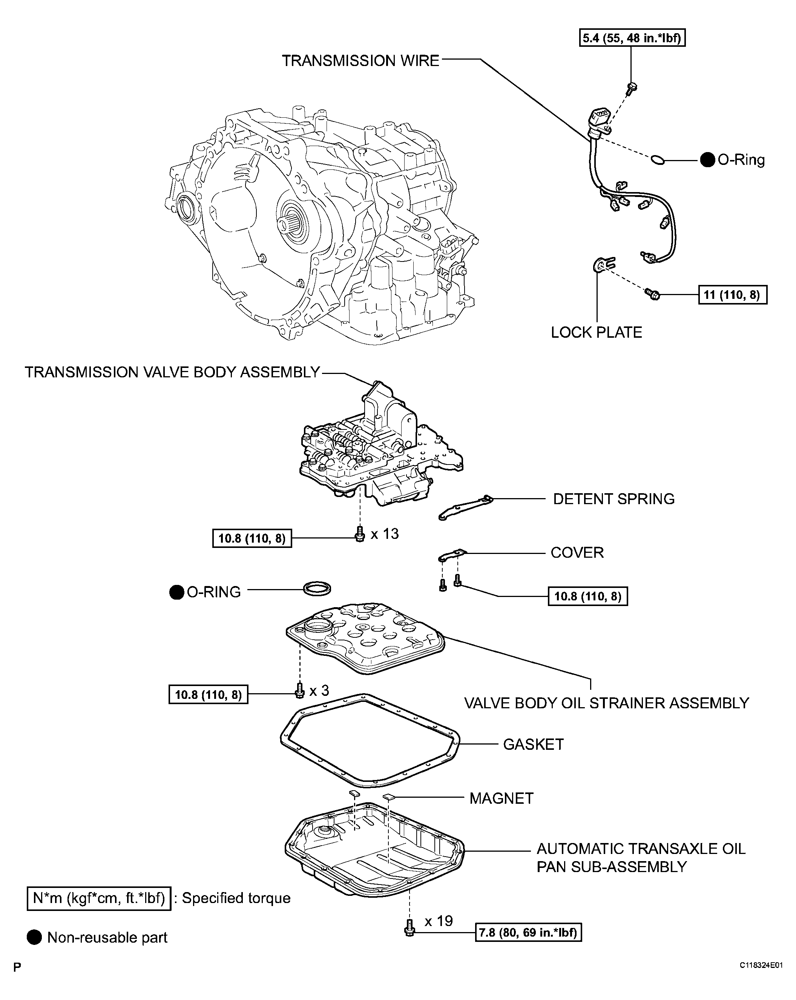

Home
>>
Scion
>>
2006
>>
xB Standard
>>
Repair and Diagnosis
>>
External Pages
>>
Different variant/trim
>>
Section 1 (U340E Automatic Transaxle)
>>
Transmission Wire
>>
Components
Transmission Wire: Components
WARNING:
This page is about a different variant/trim than selected.
Fig 1: Identifying Transmission Components

Courtesy of © TOYOTA, LICENSE AGREEMENT TMS1002